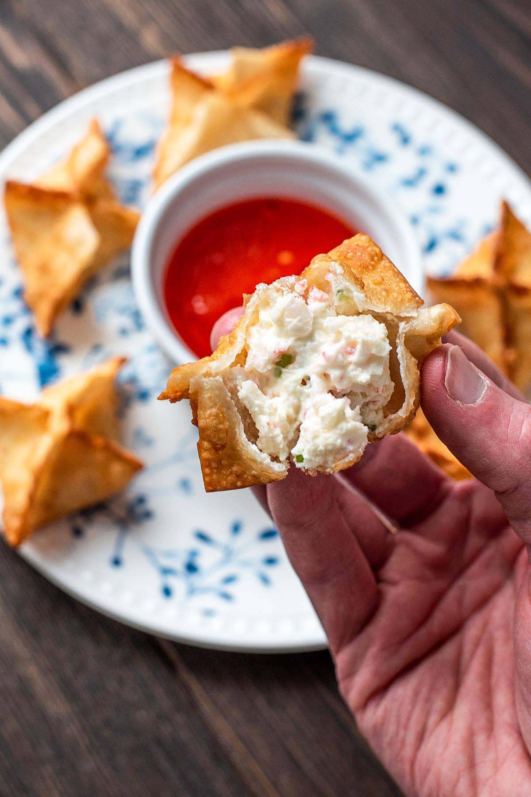

Homepage
Crab Rangoon
(Crab and Cream Cheese Filled Wontons)


Description
Crab Rangoon is a popular American Chinese appetizer consisting of wonton wrappers filled with a mixture of cream cheese, crab meat (often imitation), and seasonings, which are then deep-fried or baked until crispy.
Ingredients
- 5 ounces crab meat drained, 1 can,
can be substituted with fresh or packaged crab
- 4 ounces cream cheese softened
- 1 green onion finely slice d
- 1 teaspoon Worcestershire sauce
- 1 teaspoon soy sauce
(optional)
- ½ teaspoon garlic powder
- 18 wonton wrappers
- oil for frying
Instruction
- Preheat 1 inch of oil to 325°F over medium heat.
- In a small bowl, gently combine crab meat, cream cheese, green onion, Worcestershire sauce, soy sauce (if using), and garlic powder.
- Layout 3 wonton wrappers at a time. Place 2 teaspoons of the filling in the center of each. Dab the edges with water and fold the two opposite corners together to form a triangle. Wet the tips of the triangle and fold inward. Continue until all of your filling is used up.
- Drop the wontons into the hot oil for 2-3 minutes or until brown and crispy. Drain on paper towels.